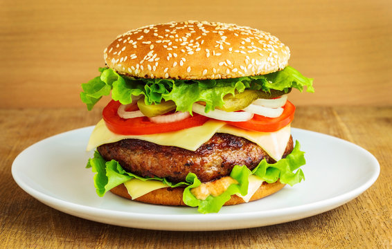

Hamburger

Description
A hamburger is a sandwich consisting of a cooked patty of ground meat,
usually beef, placed inside a sliced bun or bread roll.
Ingredients
- Ground beef
- Burger buns
- Cheese slices
- Lettuce
- Tomato
- Onion
- Pickles
- Ketchup
- Mustard
Steps
- Preheat the grill or stovetop pan.
- Form ground beef into patties and season with salt and pepper.
- Cook patties on the grill for about 4-5 minutes per side.
-
Add cheese slices on top of patties during the last minute of cooking.
- Toast burger buns on the grill until golden brown.
-
Assemble burgers with lettuce, tomato, onion, pickles, ketchup, and
mustard.
Odin Recipes